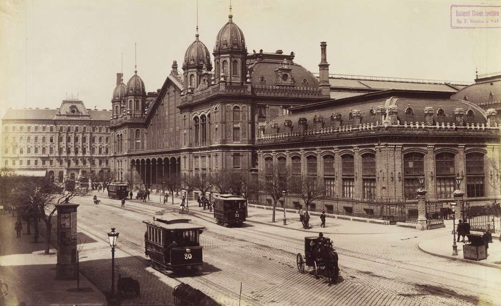
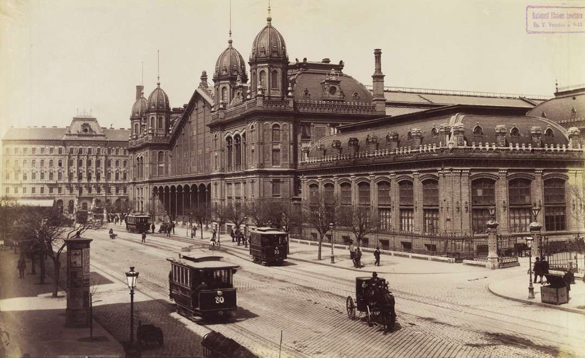
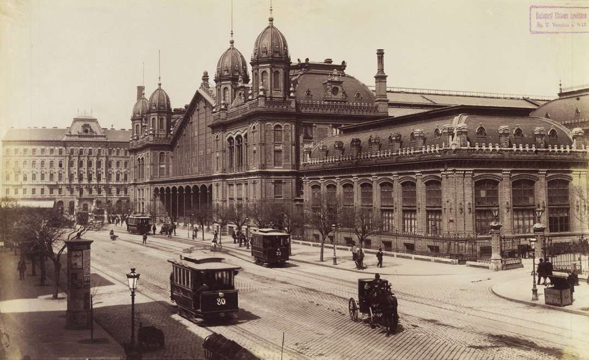

About
I born in Budapest, Hungary in 1991. me and my brother grew up in a small town called Nyergesujfalu
Let's see where it is on the map
I studied at ELTE - Eotvos Lorand University in Budapest, my bachelor degree is in Geography, with a Town planning minor.
Now i live in Leeds with my Husband, and our dog.
I work in Leeds City centre and study at the University of Leeds.
In my free time (I never have free time nowadays...) I like cooking, TRX, jogging and petting my doggo.
I like history, especially the times before the 1st world war in Hungary.
And this is my favourite city in the world - Budapest

Source: Fortepan / Budapest Főváros Levéltára